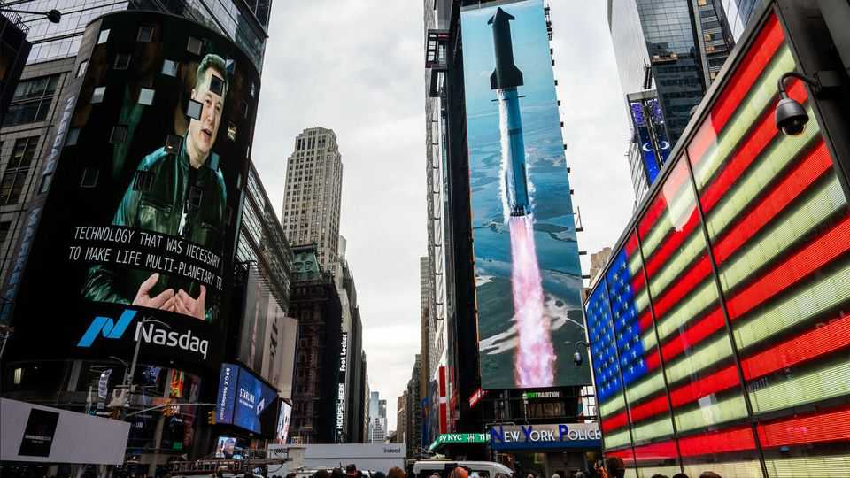

Investors have fresh doubts about Elon Musk’s grandiose ambitions
SpaceX is spending gobs of money to refashion itself as an AI company

Aug 6th 2026
ON AUGUST 5TH SpaceX may have at last achieved Elon Musk’s goal of reaching the Moon—by accident. The upper stage of a Falcon 9 rocket, which had been aimlessly drifting in space since January 2025, is believed to have smashed into the Moon’s surface near the Einstein crater at almost 9,000 kilometres per hour. It happened a day after SpaceX released its first quarterly results since its blockbuster listing in June. They had an impact, too—back on Earth. The reverberations affected industries as diverse as chipmakers and telecoms providers.
SpaceX’s top-line is rocketing, thanks as much to its terrestrial artificial-intelligence business as its rocket-and-satellite one. Its AI unit made an outsize contribution to a 92% rise in revenue for the second quarter, year on year. But the company is still in the red. Moreover, building computing capacity to rent out to AI giants like Anthropic and Google requires big investments. AI capital expenditures were close to $16bn in the quarter, more than double the group’s total revenue. They are expected to soar even higher.
Investors balked at the spending bill, as they have with other firms like Meta that are torching cash to expand their AI offerings. SpaceX’s market value, which had already fallen by more than $1trn from its peak, dropped further on the news. The slide was exacerbated by concerns over $100bn of shares that were expected to hit the market on August 6th, after the expiry of a lockup period following the listing, which prevented early backers, executives and employees from cashing out.
Mr Musk, SpaceX’s boss, threw out big numbers to entice new investors. He said data-centre capacity, expected to be about two gigawatt (GW) this year, would be “closer to 10GW...than 5GW” by the end of 2027, and that revenue would reach $1trn by 2030 (more than 20 times the projected level for this year). He made big promises about the Starlink satellite business, too, which is gaining enterprise and government customers.
But even if some people roll their eyes at such Muskisms, their consequences ripple through stock markets. The share price of Nvidia jumped on August 5th after Mr Musk pledged that SpaceX’s data centres would rely exclusively on its advanced AI chips. By contrast, those of American telecoms providers including AT&T, Verizon and T-Mobile fell after Gwynne Shotwell, SpaceX’s president, said that its new mobile satellites, due for launch next year, plus the spectrum it has acquired from EchoStar, another carrier, would win over “quite a few of their customers”.
Tesla, Mr Musk’s other trillion-dollar progeny, barely got a mention in the earnings call, despite rumours that SpaceX is considering a merger with the maker of electric vehicles and robots. Yet Mr Musk does appear to have lunar ambitions for Tesla’s humanoids. He outlined a “super sci-fi” future in which they would operate factories on the Moon building solar panels and radiators for SpaceX’s satellites. Humans may be the advanced guard. Ms Shotwell said SpaceX’s aim was to put “boots on the Moon” as early as 2028. Where space debris goes, people follow. ■